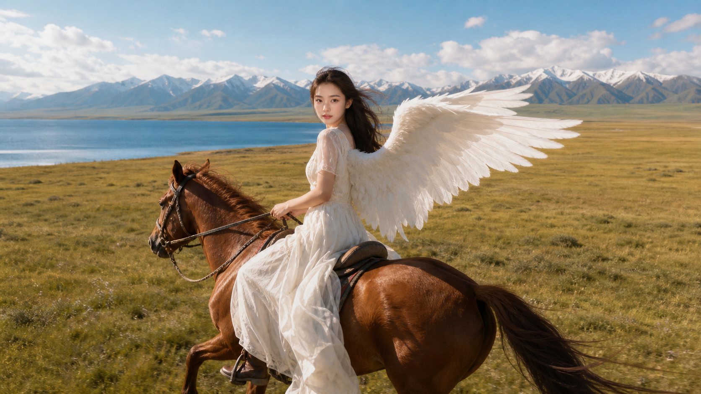

Flight · 9/3
成都天府 → 西宁曹家堡
首选 17:25 左右出发、19:10 左右落地的直飞。若下班赶不及，就筛选 18:00 后直飞，以到达不晚于 21:00 为佳。
- 优先直飞，避开到达时间过晚的中转组合
- 购票时同时比较天府与双流的回程时段
- 去程优先 TFU，回程同时比较 TFU 与 CTU

9 月 3 日晚飞西宁，9 月 8 日晚回成都。默认走张掖版小环线，也准备一条少开车的 4 日轻松线。
主线把张掖七彩丹霞纳入环线，风景层次最完整。轻松线删去张掖，把时间留给青海湖北岸和祁连，日均驾驶更友好。
湖泊、盐湖、雪山草原、丹霞一次集齐。5 个驾驶日里只有茶卡至祁连偏长，其余留得出拍照和吃饭时间。
航班时刻来自当前可查的夏秋航季信息，最终班次仍可能调整。页面只保留适合下班出发的时段和预订顺序。
首选 17:25 左右出发、19:10 左右落地的直飞。若下班赶不及，就筛选 18:00 后直飞，以到达不晚于 21:00 为佳。
9 月 4 日 08:00 取车，主线 9 月 8 日 15:30 前还车；轻松线可 9 月 7 日晚在西宁还车，次日打车去机场。
离机场近，有接送，第二天取车更顺。若到达晚或航班延误，这是最稳的首晚。
查看酒店 ↗华住系，停车和供氧设施更贴合自驾。距茶卡盐湖约 7 分钟车程。
查看酒店 ↗没有亚朵和全季时的稳妥替代，靠近卓尔山、可停车，第二天出发也方便。
查看酒店 ↗已预订。2024 年开业，位于丹霞东路 66 号，停车、早餐和第二天出城都方便。
查看酒店 ↗较新，方便还车后吃饭休息。9 月 8 日去塔尔寺或直接去机场都顺路。
查看酒店 ↗建议最晚 15:30 到机场还车区，给验车、接驳与值机留足时间。
打开 9/8 搜索 ↗一组在湖边或草原展开，一组进入祁连云杉林。想完整拍完两组，优先选 4 日轻松版；张掖版当天只保留其中一组。主视觉穿夏秋薄裙，保暖层留在镜头外。

先静态肖像，再由牵马员带领慢走，确认马匹适应翅膀后才小跑。高速奔驰镜头不背大翅膀，安全比画面更重要。
使用轻量、可快速脱离的背带。Jennie 主镜头穿薄长裙或衬衫裙，车里备薄冲锋衣和轻羽绒，拍摄间隙马上加衣。
以侧后方平行移动和高位拉远为主，不低空追马、不从马头正面逼近。飞前核对 UOM 空域、景区和马场许可。
高原线路最怕把时间卡太死。下面的确认项做好，现场只需要看天气决定停留长短。